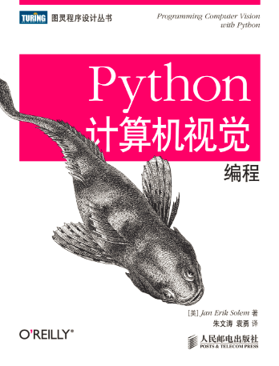

- 原书名：
- Programming Computer Vision with Python
- 作者：
- [瑞典] Jan Erik Solem
- 译者：
- 朱文涛 & 袁勇
- Python：
- 2.7.x
- 页数：
- 284
- 出版日期：
- 2014-06
- 中译本源码部分调试完毕，后续源码敬请期待；
- 原英文书源码和数据库不全，推荐中译本源码；
- 中译版源码在保持原英文源码的基础上进行了本土化；
- 完善了书中的实例；
The project page is still under development.
关于本书
本书介绍Python的计算机视觉编程，用清晰的Python示例，细致讲解对象识别、3D重建、立体图像、增强现实及其他计算机视觉应用技巧，给出了分析图像的工具与方法。内容：机器人导航、医学图像分析；图像映射与变换；多图像的3D重建；用聚类方法基于相似性和内容组织图像；基于视觉内容的图像检索技巧；实现图像内容分类和对象识别的算法；通过Python接口访问常用的OpenCV库。